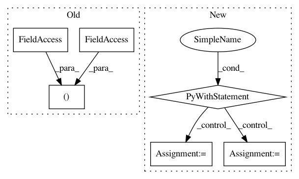

4acd61442955baa2509fdc2961284c9d2a986f34,tflearn/layers/recurrent.py,BasicLSTMCell,__call__,#BasicLSTMCell#Any#Any#Any#,637
Before Change
def __call__(self, inputs, state, scope):
// Parameters of gates are concatenated into one multiply for efficiency.
c, h = array_ops.split(1, 2, state)
self.W, self.b, concat = _linear([inputs, h], 4 * self._num_units,
self.bias, self.W, self.b,
self.W_init,
trainable=self.trainable,
After Change
def __call__(self, inputs, state, scope=None):
Long short-term memory cell (LSTM).
with tf.variable_scope(scope or type(self).__name__): // "BasicLSTMCell"
// Parameters of gates are concatenated into one multiply for efficiency.
if self._state_is_tuple:
c, h = state
else:
c, h = array_ops.split(1, 2, state)
concat = _linear([inputs, h], 4 * self._num_units, True, 0.,
self.weights_init, self.trainable, self.restore,
self.reuse)
// i = input_gate, j = new_input, f = forget_gate, o = output_gate
i, j, f, o = array_ops.split(1, 4, concat)
new_c = (c * self._inner_activation(f + self._forget_bias) +
self._inner_activation(i) *
self._activation(j))
new_h = self._activation(new_c) * self._inner_activation(o)
if self._state_is_tuple:
new_state = _rnn_cell.LSTMStateTuple(new_c, new_h)
else:
new_state = array_ops.concat(1, [new_c, new_h])
// Retrieve RNN Variables
with tf.variable_scope("Linear", reuse=True):
self.W = tf.get_variable("Matrix")
self.b = tf.get_variable("Bias")
return new_h, new_state
class GRUCell(_rnn_cell.RNNCell):
TF GRU Cell with extra customization params.
def __init__(self, num_units, input_size=None, activation=tf.tanh,
In pattern: SUPERPATTERN
Frequency: 3
Non-data size: 6
Instances
Project Name: tflearn/tflearn
Commit Name: 4acd61442955baa2509fdc2961284c9d2a986f34
Time: 2016-07-01
Author: aymeric.damien@gmail.com
File Name: tflearn/layers/recurrent.py
Class Name: BasicLSTMCell
Method Name: __call__
Project Name: streamlit/streamlit
Commit Name: 8d6e295859edc8c93a2c5dded536588cf01b55e6
Time: 2018-04-28
Author: adrien.g.treuille@gmail.com
File Name: local/server/streamlit/local/io.py
Class Name:
Method Name: echo
Project Name: tflearn/tflearn
Commit Name: 4acd61442955baa2509fdc2961284c9d2a986f34
Time: 2016-07-01
Author: aymeric.damien@gmail.com
File Name: tflearn/layers/recurrent.py
Class Name: BasicRNNCell
Method Name: __call__